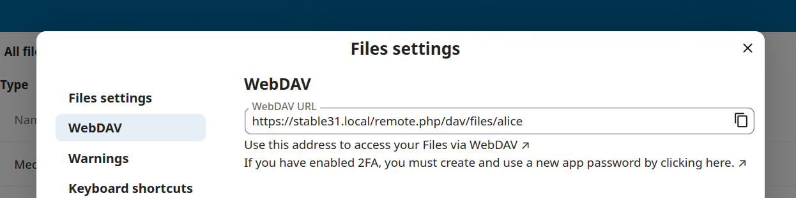

Rochtain ar chomhaid Nextcloud a fháil ag baint úsáide as WebDAV
Tacaíonn Nextcloud go hiomlán le prótacal WebDAV, agus is féidir leat ceangal agus sioncrónú le Comhaid Nextcloud thar WebDAV. Sa chaibidil seo, foghlaimeoidh tú conas Linux, macOS, Windows, agus gléasanna soghluaiste a nascadh le do fhreastalaí Nextcloud.
WebDAV stands for Distributed Authoring and Versioning. It is an HTTP extension that makes it easy to create, read, and edit files hosted on remote Web servers. With a WebDAV client, you can access your Nextcloud Files (including shares) on Linux, macOS and Windows in a similar way as any remote network share, and stay synchronized.
Sula ndéanaimid WebDAV a chumrú, féachaimis go tapa ar an mbealach molta chun feistí cliant a nascadh le Nextcloud
Cliaint oifigiúla deisce agus soghluaiste Nextcloud
Is é an bealach a mholtar chun ríomhaire a shioncronú le freastalaí Nextcloud ná úsáid a bhaint as cliaint sioncronaithe Nextcloud oifigiúil. Is féidir leat an cliant a chumrú chun comhaid a shábháil in aon eolaire áitiúil agus is féidir leat na heolairí a roghnú ar fhreastalaí Nextcloud chun sioncronú leo. Taispeánann an cliant an stádas ceangail reatha agus logálann sé gach gníomhaíocht, ionas go mbeidh a fhios agat i gcónaí cé na comhaid iargúlta a íoslódáladh chuig do ríomhaire agus is féidir leat a fhíorú go bhfuil comhaid cruthaithe agus nuashonraithe ar do ríomhaire áitiúil sioncronaithe i gceart leis an bhfreastalaí.
Is é an bealach molta chun gléasanna Android agus Apple iOS a shioncronú ná úsáid a bhaint as aipeanna soghluaiste oifigiúla Nextcloud.
Chun na haipeanna oifigiúla Nextcloud a nascadh le freastalaí Nextcloud bain úsáid as an URL céanna a úsáideann tú chun Nextcloud a rochtain ó do bhrabhsálaí gréasáin - m.sh.:
https://cloud.example.com
https://example.com/nextcloud (if Nextcloud is installed in a subdirectory called "nextcloud")
Cliaint WebDAV tríú páirtí
Más fearr leat, is féidir leat do ríomhaire a nascadh le do fhreastalaí Nextcloud trí úsáid a bhaint as aon chliant tríú páirtí a thacaíonn le prótacal WebDAV (lena n-áirítear an méid a d'fhéadfadh a bheith ionsuite i do chóras oibriúcháin).
Is féidir leat aipeanna tríú páirtí atá in ann WebDAV a úsáid freisin chun do ghléas soghluaiste a nascadh le Nextcloud.
Nuair a bhíonn cliaint tríú páirtí á n-úsáid agat, coinnigh i gcuimhne nach féidir iad a uasmhéadú le húsáid le Nextcloud nó cumais a chur i bhfeidhm a mheasann tú a bheith tábhachtach do do chás úsáide.
I measc na gcliant móibíleacha a thuairiscigh baill pobail Nextcloud a úsáideann:
Tá an URL le húsáid agus aipeanna tríú páirtí á chumrú chun nascadh le Nextcloud beagán níos faide ná an URL do chliaint oifigiúla:
https://cloud.example.com/remote.php/dav/files/USERNAME/
https://example.com/nextcloud/remote.php/dav/files/USERNAME/ (if Nextcloud is installed in a subdirectory called "nextcloud")
Note
When using a third-party WebDAV client (including your operating system's built-in client), you should use an application password for login rather than your regular password. In addition improved security, this increases performance significantly. To configure an application password, log into the Nextcloud Web interface, click on the avatar in the top right and choose Personal settings. Then choose Security in the left sidebar and scroll to the very bottom. There you can create an app password (which can also be revoked in the future without changing your main user password).
Note
Sna samplaí seo a leanas, ba cheart duit URL do fhreastalaí Nextcloud a chur in ionad example.com/nextcloud (fág amach an chuid eolaire má tá an tsuiteáil i bhfréamh d'fhearainn), agus USERNAME leis an ainm úsáideora an úsáideora nasctha.
See the WebDAV URL, to be found in Files Settings -> WebDAV in the Files on your Nextcloud account.

Comhaid a rochtain ag baint úsáide as Linux
Is féidir leat comhaid a rochtain i gcórais oibriúcháin Linux ag baint úsáide as na modhanna seo a leanas.
Nautilus bainisteoir comhad
**Nuair a chumraíonn tú do chuntas Nextcloud sa ** Lárionad Rialaithe GNOME, **beidh Nautilus gléasta ar do chomhaid go huathoibríoch mar chomhroinnt WebDAV, ach amháin má dhíroghnaíonn tú rochtain comhaid* *.
Is féidir leat do chomhaid Nextcloud a shuiteáil de láimh freisin. Úsáid an prótacal `` davs://`` chun an bainisteoir comhad Nautilus a nascadh le do sciar Nextcloud:
davs://example.com/nextcloud/remote.php/dav/files/USERNAME/
Note
Mura bhfuil do nasc freastalaí slán le HTTPS, úsáid `` dav: //`` in ionad `` davs: //``:

Note
Oibríonn an modh céanna do bhainisteoirí comhad eile a úsáideann GVFS, mar shampla MATE's Caja agus Cinnamon's Nemo.
Comhaid a rochtain le bainisteoir comhad KDE agus Dolphin
Chun rochtain a fháil ar do chomhaid Nextcloud ag baint úsáid as an mbainisteoir comhad Dolphin in KDE, úsáid an prótacal webdav://:
webdav://example.com/nextcloud/remote.php/dav/files/USERNAME/

Is féidir leat nasc buan a chruthú le do fhreastalaí Nextcloud:
Oscail Deilf agus cliceáil "Líonra" sa cholún "Áiteanna" ar thaobh na láimhe clé.
Cliceáil ar an deilbhín lipéadaithe Cuir Fillteán Líonra Leis. Ba cheart go mbeadh an dialóg mar thoradh air le feiceáil le WebDAV roghnaithe cheana féin.
Mura bhfuil WebDAV roghnaithe, roghnaigh é.
Cliceáil Ar Aghaidh.
Cuir isteach na socruithe seo a leanas:
Ainm: an t-ainm is mian leat a fheiceáil sa leabharmharc Áiteanna, mar shampla, Nextcloud.
Úsáideoir: an t-ainm úsáideora Nextcloud a d'úsáid tú chun logáil isteach, mar shampla, admin.
Freastalaí: an t-ainm fearainn Nextcloud, mar shampla, example.com (gan ** http://** roimhe seo nó eolairí ina dhiaidh).
Fillteán -- Cuir isteach an cosán
nextcloud/remote.php/dav/files/USERNAME/.
(Roghnach) Seiceáil an ticbhosca "Cruthaigh deilbhín" le go mbeidh leabharmharc le feiceáil sa cholún Áiteanna.
(Roghnach) Cuir aon socruithe speisialta nó teastas SSL ar fáil sa ticbhosca "Port & Criptithe".
Gléasanna WebDAV a chruthú ar an líne ordaithe Linux
Is féidir leat gléasanna WebDAV a chruthú ón líne ordaithe Linux. Tá sé seo úsáideach más fearr leat rochtain a fháil ar Nextcloud ar an mbealach céanna le cianchóras comhad ar bith eile. Léiríonn an sampla seo a leanas conas gléas pearsanta a chruthú agus é a shuiteáil go huathoibríoch gach uair a logáil tú isteach ar do ríomhaire Linux.
Suiteáil an tiománaí córas comhaid WebDAV `` davfs2``, a ligeann duit scaireanna WebDAV a fheistiú díreach mar aon chianchóras comhaid eile. Úsáid an t-ordú seo chun é a shuiteáil ar Debian/Ubuntu
apt-get install davfs2
Bain úsáid as an ordú seo chun é a shuiteáil ar CentOS, Fedora, agus openSUSE
yum install davfs2
Cuir tú féin leis an ngrúpa
davfs2usermod -aG davfs2 <username>
Ansin cruthaigh eolaire
nextcloudi do eolaire baile don mount point, agus.davfs2/do do chomhad cumraíochta pearsanta:mkdir ~/nextcloud mkdir ~/.davfs2
Cóipeáil
/etc/davfs2/rúingo~/.davfs2cp /etc/davfs2/secrets ~/.davfs2/secrets
Socraigh tú féin mar an t-úinéir agus déan na ceadanna a léamh agus a scríobh úinéir amháin:
chown <linux_username>:<linux_username> ~/.davfs2/secrets chmod 600 ~/.davfs2/secrets
Cuir do dhintiúir logáil isteach Nextcloud le deireadh an chomhaid
secrets, ag baint úsáide as URL do fhreastalaí Nextcloud agus d'ainm úsáideora agus do phasfhocal Nextcloud:https://example.com/nextcloud/remote.php/dav/files/USERNAME/ <username> <password> or $PathToMountPoint $USERNAME $PASSWORD for example /home/user/nextcloud john 1234
Cuir an t-eolas gléasta le
/etc/fstab:https://example.com/nextcloud/remote.php/dav/files/USERNAME/ /home/<linux_username>/nextcloud davfs user,rw,auto 0 0
Ansin déan tástáil go suiteálann sé agus go bhfíordheimhníonn sé tríd an ordú seo a leanas a rith. Má shocraigh tú i gceart é ní bheidh ceadanna fréimhe uait:
mount ~/nextcloud
Ba cheart go mbeifeá in ann é a dhíshuiteáil freisin:
umount ~/nextcloud
Anois, gach uair a logálann tú isteach ar do chóras Linux ba cheart go n-oibreodh do sciar Nextcloud go huathoibríoch trí WebDAV i do eolaire ~/nextcloud. Más fearr leat é a shuiteáil de láimh, athraigh `` auto`` go `` noauto`` in /etc/fstab.
Saincheisteanna aitheanta
Fadhb
Níl an acmhainn ar fáil go sealadach
Réiteach
Má bhíonn trioblóid agat nuair a chruthaíonn tú comhad san eolaire, cuir /etc/davfs2/davfs2.conf in eagar agus cuir leis:
use_locks 0
Fadhb
Teastas rabhaidh
Réiteach
Má úsáideann tú teastas féin-shínithe, gheobhaidh tú rabhadh. Chun é seo a athrú, ní mór duit davfs2 a chumrú chun do theastas a aithint. Cóipeáil mycertificate.pem go /etc/davfs2/certs/. Ansin cuir /etc/davfs2/davfs2.conf in eagar agus déan trácht ar an líne servercert. Anois cuir cosán do theastas mar atá sa sampla seo:
servercert /etc/davfs2/certs/mycertificate.pem
Comhaid a rochtain ag baint úsáide as macOS
Note
The macOS Finder suffers from a series of implementation problems and should only be used if the Nextcloud server runs on Apache and mod_php, or Nginx 1.3.8+. Alternative macOS-compatible clients capable of accessing WebDAV shares include open source apps like Cyberduck (see instructions here) and Filezilla. Commercial clients include Mountain Duck, Forklift, Transmit, and Commander One.
Chun comhaid a rochtain tríd an Aimsitheoir macOS:
Ó bharrbharra roghchláir an Aimsitheoir, roghnaigh Téigh > Ceangail le Freastalaí…:

Nuair a osclaítear an fhuinneog Ceangail le Freastalaí…, cuir isteach seoladh WebDAV do fhreastalaí Nextcloud sa réimse Seoladh Freastalaí:, i.e.:
https://cloud.YOURDOMAIN.com/remote.php/dav/files/USERNAME/

Cliceáil Ceangail. Ba cheart go mbeadh do fhreastalaí WebDAV le feiceáil ar an Deasc mar thiomántán diosca roinnte.
Comhaid a rochtain ag baint úsáide as Microsoft Windows
Má úsáideann tú forfheidhmiú dúchais Windows de WebDAV, is féidir leat Nextcloud a mhapáil chuig tiomántán nua ag baint úsáide as Windows Explorer. Cuireann mapáil chuig tiomántán ar do chumas comhaid atá stóráilte ar fhreastalaí Nextcloud a bhrabhsáil ar an mbealach a bhrabhsálann tú comhaid atá stóráilte i dtiomántán líonra mapáilte.
Teastaíonn nascacht líonra chun an ghné seo a úsáid. Más mian leat do chuid comhad a stóráil as líne, bain úsáid as an gCliant Deisce chun gach comhad ar do Nextcloud a shioncronú le heolaire amháin nó níos mó de do thiomáint crua áitiúil.
Note
Windows 10 réamhshocraithe anois chun Fíordheimhniú Bunúsach a cheadú má tá HTTPS cumasaithe roimh do thiomáint a mhapáil.
Ar leaganacha níos sine de Windows, ní mór duit cead a thabhairt do Bhunfhíordheimhniú a úsáid i gClárlann Windows:
seol `` regedit`` agus déan nascleanúint chuig `` HKEY_LOCAL_MACHINE SYSTEM CurrentControlSet Services WebClient Parameters``.
Cruthaigh nó cuir in eagar an luach
BasicAuthLevel(Windows Vista, 7 agus 8), nóUseBasicAuth(Windows XP agus Windows Server 2003), `` DWORD`` agus socraigh a shonraí luacha go1le haghaidh naisc SSL. Ciallaíonn luach0go bhfuil Fíordheimhniú Bunúsach díchumasaithe, agus ceadaíonn luach `` 2`` naisc SSL agus neamh-SSL araon (ní mholtar).Ansin scoir Eagarthóir Clárlainne, agus atosaigh an ríomhaire.
Tiomántáin a mhapáil leis an líne ordaithe
Taispeánann an sampla seo a leanas conas tiomántán a mhapáil leis an líne ordaithe. Chun an tiomáint a mhapáil:
Oscail ordú pras i Windows.
Cuir isteach an líne seo a leanas sa leid ordaithe chun mapáil chuig tiomántán Z an ríomhaire:
net use Z: https://<drive_path>/remote.php/dav/files/USERNAME/ /user:youruser yourpassword
le <drive_path> mar an URL chuig do fhreastalaí Nextcloud. Mar shampla:
net use Z: https://example.com/nextcloud/remote.php/dav/files/USERNAME/ /user:youruser yourpassword
Mapálann an ríomhaire comhaid do chuntais Nextcloud chuig an litir tiomántán Z.
Error
If you get the following error
System error 67 has occurred. The network name cannot be found.,
or frequent disconnections, open the Services app and make sure
that the WebClient service is running and started automatically at startup.
Note
Cé nach moltar é, is féidir leat an freastalaí Nextcloud a shuiteáil ag baint úsáide as HTTP freisin, rud a fhágann nach bhfuil an nasc criptithe.
Má tá sé ar intinn agat naisc HTTP a úsáid ar ghléasanna agus tú in áit phoiblí, molaimid go láidir tollán VPN a úsáid chun an tslándáil riachtanach a sholáthar.
Comhréir ordaithe eile is ea:
net use Z: \\example.com@ssl\nextcloud\remote.php\dav /user:youruser
yourpassword
Tiomántáin a mhapáil le Windows Explorer
Chun tiomántán a mhapáil le Microsoft Windows Explorer:
Oscail Windows Explorer ar do ríomhaire MS Windows.
Cliceáil ar dheis ar iontráil Ríomhaire agus roghnaigh Map network drive… ón roghchlár anuas.
Roghnaigh tiomántán líonra áitiúil ar mian leat Nextcloud a mhapáil chuige.
Sonraigh an seoladh chuig do shampla Nextcloud, agus ina dhiaidh /remote.php/dav/files/USERNAME/.
Mar shampla:
https://example.com/nextcloud/remote.php/dav/files/USERNAME/
Note
Maidir le freastalaithe atá cosanta ag SSL, seiceáil Athcheangail ag síniú isteach lena chinntiú go bhfuil an mhapáil leanúnach ar atosaithe ina dhiaidh sin. Más mian leat ceangal leis an bhfreastalaí Nextcloud mar úsáideoir eile, seiceáil Ceangail ag baint úsáide as dintiúir éagsúla.

Cliceáil ar an gcnaipe
Críochnaigh.
Léarscáileanna Windows Explorer an tiomántán líonra, ag cur do shampla Nextcloud ar fáil.
Comhaid a rochtain ag úsáid Cyberduck
Is brabhsálaí foinse oscailte é Cyberduck FTP, SFTP, WebDAV, OpenStack Swift, agus Amazon S3 atá deartha le haghaidh aistrithe comhad ar macOS agus Windows.
Note
Úsáideann an sampla seo Cyberduck leagan 4.2.1.
Cyberduck a úsáid:
Sonraigh freastalaí gan aon fhaisnéis phrótacail tosaigh.
Mar shampla:
example.comSonraigh an port cuí.
Braitheann an calafort a roghnaíonn tú ar cibé an dtacaíonn nó nach dtacaíonn do fhreastalaí Nextcloud le SSL. Éilíonn Cyberduck go roghnaíonn tú cineál ceangail eile má tá sé beartaithe agat SSL a úsáid.
- Mar shampla:
`` 80`` le haghaidh WebDAV neamhchriptithe
`` 443`` le haghaidh WebDAV slán (HTTPS/SSL)
Úsáid an roghchlár anuas 'More Options' chun an chuid eile de do URL WebDAV a chur isteach sa réimse 'Conair'.
Mar shampla:
remote.php/dav/files/USERNAME/
Anois cuireann Cyberduck ar chumas rochtain comhad ar an bhfreastalaí Nextcloud.
Fadhbanna aitheanta
Fadhb
Ní nascann Windows le HTTPS.
Réiteach 1
Seans nach dtacaíonn Cliant Windows WebDAV le Tásc Ainm Freastalaí (SNI) ar naisc criptithe. Má thagann tú trasna ar earráid agus sampla Nextcloud criptithe ag SSL á shuiteáil agat, déan teagmháil le do sholáthraí maidir le seoladh IP tiomnaithe a shannadh do do fhreastalaí SSL-bhunaithe.
Réiteach 2
Seans nach dtacaíonn Cliant Windows WebDAV le naisc TLSv1.1 agus TLSv1.2. Má tá srian curtha agat le cumraíocht do fhreastalaí chun TLSv1.1 agus os a chionn amháin a sholáthar, seans go dteipfidh ar an gceangal le do fhreastalaí. Féach le do thoil ar dhoiciméadú WinHTTP le haghaidh tuilleadh eolais.
Fadhb
Faigheann tú an teachtaireacht earráide seo a leanas: Earráid 0x800700DF: Sáraíonn méid an chomhaid an teorainn atá ceadaithe agus ní féidir é a shábháil.
Réiteach
Cuireann Windows teorainn leis an uasmhéid a fhéadfaidh comhad a aistriú ó nó chuig sciar WebDAV. Is féidir leat an luach FileSizeLimitInBytes a mhéadú i HKEY_LOCAL_MACHINESYSTEM\ CurrentControlSetServicesWebClientParameters trí chliceáil ar Athraigh.
Chun an teorainn go dtí an t-uasluach 4GB a mhéadú, roghnaigh Deachúil, cuir isteach luach 4294967295, agus atosaigh Windows nó atosaigh an tseirbhís WebClient.
Fadhb
Má chuirtear tiomántán WebDAV ar Windows leis na céimeanna thuasluaite, ní thaispeánfar an méid ceart spáis atá ar fáil sa Nextcloud agus ina ionad sin taispeánann sé méid an tiomántáin C: leis an spás atá ar fáil dó.
Freagra
Ar an drochuair, is teorannú é seo ar WebDAV féin, toisc nach dtugann sé bealach don chliant an spás saor in aisce atá ar fáil a fháil ón bhfreastalaí. Titeann Windows ar ais go huathoibríoch chun méid an tiomántáin C: a thaispeáint leis an spás atá ar fáil ina ionad. Mar sin, ar an drochuair, níl aon réiteach fíor ar an bhfadhb seo.
Fadhb
Theip ar rochtain a fháil ar do chuid comhad ó Microsoft Office trí WebDAV.
Réiteach
Déantar fadhbanna aitheanta agus a réitigh a dhoiciméadú san alt KB2123563.
Fadhb
Ní féidir Nextcloud a mhapáil mar thiomáint WebDAV i Windows ag baint úsáide as teastas féin-shínithe.
Réiteach
Rochtain ar do shampla Nextcloud tríd an mbrabhsálaí Gréasáin is fearr leat.
Cliceáil ar aghaidh go dtí go bhfaighidh tú an earráid deimhnithe i líne stádais an bhrabhsálaí.
View the certificate, then from the Details tab, select 'Copy to File'.
Sábháil an comhad ar do dheasc le hainm treallach, mar shampla
myNextcloud.pem.Go to Start menu > Run, type MMC, and click 'OK' to open Microsoft Management Console.
Téigh go Comhad > Cuir leis/Bain Snap-In.
Select Certificates, Click 'Add', choose 'My User Account', then 'Finish', and finally 'OK'.
Dig síos go Trust Root Certification Údaráis, Deimhnithe.
Deaschliceáil Teastas, Roghnaigh Gach Tasc, agus Iompórtáil.
Roghnaigh an teastas sábháilte ón Deasc.
Roghnaigh Cuir gach Deimhniú sa Stór seo a leanas, agus cliceáil Brabhsáil.
Check the Box that says Show Physical Stores, expand out Trusted Root Certification Authorities, select Local Computer there, click 'OK', and Complete the Import.
Seiceáil an liosta chun a chinntiú go dtaispeánfar an teastas. Is dócha go mbeidh ort Athnuachan a dhéanamh sula bhfeiceann tú é.
Scoir MMC.
D'úsáideoirí Firefox:
Seoladh do bhrabhsálaí, téigh go roghchlár Feidhmchláir > Stair > Glan stair le déanaí...
Roghnaigh 'Gach Rud' sa roghchlár anuas 'Raon ama le glanadh'
Roghnaigh an ticbhosca 'Logálacha Gníomhacha'
Cliceáil ar an gcnaipe 'Glan anois'
Dún an brabhsálaí, ansin athoscail agus tástáil.
Le haghaidh brabhsálaithe Chrome-bhunaithe (Chrome, Chromium, Microsoft Edge): úsáideoirí:
Oscail Painéal Rialúcháin Windows, nascleanúint síos go dtí Internet Options
Sa chluaisín Ábhar, cliceáil ar an Clear SSL State cnaipe.
Dún an brabhsálaí, ansin athoscail agus tástáil.
Comhaid a rochtain ag baint úsáide as cURL
Ós rud é gur síneadh HTTP é WebDAV, is féidir cURL a úsáid chun oibríochtaí comhaid a scríobh.
Note
Socruithe → Riarachán → Roinnt → Ceadaigh d’úsáideoirí ar an bhfreastalaí seo scaireanna a sheoladh chuig freastalaithe eile. Má tá an rogha seo díchumasaithe, ní mór an rogha --header "X-Requested-With: XMLHttpRequest" a chur ar aghaidh chuig cURL.
Chun fillteán a chruthú leis an dáta reatha mar ainm:
$ curl -u user:pass -X MKCOL "https://example.com/nextcloud/remote.php/dav/files/USERNAME/$(date '+%d-%b-%Y')"
Chun comhad error.log a uaslódáil isteach san eolaire sin:
$ curl -u user:pass -T error.log "https://example.com/nextcloud/remote.php/dav/files/USERNAME/$(date '+%d-%b-%Y')/error.log"
Chun comhad a bhogadh:
$ curl -u user:pass -X MOVE --header 'Destination: https://example.com/nextcloud/remote.php/dav/files/USERNAME/target.jpg' https://example.com/nextcloud/remote.php/dav/files/USERNAME/source.jpg
Chun airíonna comhaid sa bhfréamhfhillteán a fháil:
$ curl -X PROPFIND -H "Depth: 1" -u user:pass https://example.com/nextcloud/remote.php/dav/files/USERNAME/ | xml_pp
<?xml version="1.0" encoding="utf-8"?>
<d:multistatus xmlns:d="DAV:" xmlns:oc="http://nextcloud.org/ns" xmlns:s="http://sabredav.org/ns">
<d:response>
<d:href>/nextcloud/remote.php/dav/files/USERNAME/</d:href>
<d:propstat>
<d:prop>
<d:getlastmodified>Tue, 13 Oct 2015 17:07:45 GMT</d:getlastmodified>
<d:resourcetype>
<d:collection/>
</d:resourcetype>
<d:quota-used-bytes>163</d:quota-used-bytes>
<d:quota-available-bytes>11802275840</d:quota-available-bytes>
<d:getetag>"561d3a6139d05"</d:getetag>
</d:prop>
<d:status>HTTP/1.1 200 OK</d:status>
</d:propstat>
</d:response>
<d:response>
<d:href>/nextcloud/remote.php/dav/files/USERNAME/welcome.txt</d:href>
<d:propstat>
<d:prop>
<d:getlastmodified>Tue, 13 Oct 2015 17:07:35 GMT</d:getlastmodified>
<d:getcontentlength>163</d:getcontentlength>
<d:resourcetype/>
<d:getetag>"47465fae667b2d0fee154f5e17d1f0f1"</d:getetag>
<d:getcontenttype>text/plain</d:getcontenttype>
</d:prop>
<d:status>HTTP/1.1 200 OK</d:status>
</d:propstat>
</d:response>
</d:multistatus>
Comhaid a rochtain ag baint úsáide as WinSCP
Is cliant foinse oscailte saor in aisce SFTP, FTP, WebDAV, S3 agus SCP do Windows é `WinSCP <https://winscp.net/eng/docs/introduction/>. Is í an phríomhfheidhm atá aige ná comhad a aistriú idir ríomhaire áitiúil agus ríomhaire iargúlta. Thairis sin, cuireann WinSCP feidhmiúlacht scriptithe agus bainistíochta comhad bunúsach ar fáil.
Is féidir a íoslódáil an leagan iniompartha de WinSCP agus é a rith ar Linux tríd Wine.
Chun WinSCP a rith ar Linux, íoslódáil fíon trí bhainisteoir pacáiste do dháileadh, ansin é a rith leis an ordú: `` fíon WinSCP.exe``.
Chun nascadh le Nextcloud:
Tosaigh WinSCP
Brúigh 'Seisiún' sa roghchlár
Brúigh an rogha roghchláir ‘Seisiún Nua’
Socraigh an 'Prótacal Comhad' anuas go WebDAV
Socraigh an anuas 'Criptiúchán' go criptiúchán intuigthe TLS/SSL
Líon isteach an réimse óstainm:
example.comLíon isteach an réimse ainm úsáideora:
NEXTCLOUDUSERNAMELíon isteach réimse an fhocail faire:
NEXTCLOUDPASSWORDBrúigh an cnaipe 'Advanced...'
Déan nascleanúint go dtí 'Comhshaol', 'Eolairí' ar an taobh clé
Líon isteach an réimse 'Ianeolaire' leis an méid seo a leanas:
/nextcloud/remote.php/dav/files/NEXTCLOUDUDUSERNAME/Brúigh an cnaipe 'OK'
Brúigh an cnaipe 'Sábháil'
Roghnaigh na roghanna atá ag teastáil agus brúigh an cnaipe 'OK'
Brúigh an cnaipe 'Logáil isteach' chun ceangal le Nextcloud
Note
It is recommended to use an app password for the password if you use TOTP as WinSCP does not understand TOTP with Nextcloud at the time of writing (2022-11-07).